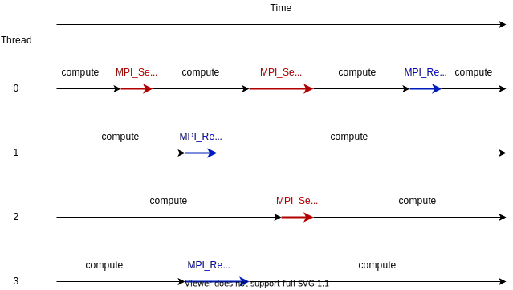

MPI is an excellent tool for parallel execution of programs. A key
strength is that the programmer must explicitly move data to where it
is needed. That can make code easier to understand, albeit more work
since both authors and maintainers spend more time reading
existing code than writing new code, that is often desirable.
However, such approaches tend to perform poorly at scale. Computer
hardware has not grown much faster in the last 20 years, but instead
made many more potentially parallel execution units available. One can
hardly buy a single-core CPU any more, and HPC nodes with multiple CPU
sockets each containing scores of cores abound. MPI was designed in an
era where it was much more common to find a node with only a single
processor and a single core, and total counts were in the hundreds to
thousands. Such jobs are often too small to be permitted to run on
current high-end clusters.
Code that assumes one MPI process to a core has trouble scaling to
\(N\) processes (eg. for \(N > 1000\)) for several reasons:
collective communication cost tends to scale at least like
\(\mathrm{log} N\) - aggregating messages helps a lot but more
processes as starting and ending points for messages simply must
take more time
data must be replicated to each process, which takes time that grows
with the process count
replicated data forces cores to share the memory bandwith, thus
defeating the advantages of shared memory caches
Comparing pure MPI vs hybrid MPI-threading solutions. MPI ranks are
shown in red boxes. Total memory usage and message cost tends to be
lower with hybrid, because threads can share the same
memory. However, realizing those benefits can lead to further work
to reduce contention and eliminate race conditions.
Imagine if a halo-exchange application like that from an earlier
lesson
was implemented in these two ways. The pure-MPI solution has a much
larger volume of data in the border and halo regions. That means more
data must be sent in total, as well as more messages between pairs of
MPI ranks. In the hybrid case, both are reduced. However, the hybrid
solution can have other challenges, including code complexity, usage
complexity, synchronization, and avoiding problematic sharing.
The MPI standard has been updated to accommodate the use of threads
within processes. Using these capabilities is optional, and presents
numerous advantages and disadvantages
implicitly shared data can be harder to reason about correctly
(eg. race conditions)
code now has to be correct MPI code and correct threaded code
possibility of lower performance from cache contention, when one thread
writes to memory that is very close to where another thread needs to read
more code complexity
might be merely shifting bottlenecks from one place to another
(eg. opening and closing OpenMP thread regions)
needs higher quality MPI implementations
it can be awkward to use libraries that also use threading internally
usage gets more complicated, as both ranks and threads have to be
shepherded onto cores for maximum performance
Quiz: Is an application that already scales well with
MPI and which uses large amounts of read-only data a good candidate
for MPI with threading?
Yes, threads can share the memory
No, threads will have problems from cache contention
No, RMA would definitely be better
Can’t tell on the information given
Solution
Can’t tell. Any of the three statements could be true. But one
often needs to understand the whole story. If reading the data
is less of a problem than writing the results subject to cache
contention then maybe hybrid would be better, etc.
OpenMP is the open standard for HPC
threading, and is widely used with many quality implementations. It is
possible to use raw pthreads, and you will find MPI
examples using them, but this is much less productive in programmer
time. It made more sense when OpenMP was less mature. In most HPC
cases, OpenMP is implemented using pthreads.
Since version 2.0, MPI can be initialized in up to four different
ways. The former approach using MPI_Init still works, but
applications that wish to use threading should use
MPI_Init_thread.
The argc and argv may be NULL (and generally should
be). required describes the level of threading support that is
requested, and the value returned in *provided describes the
level that the MPI runtime was able to provide. If this is not the
level required, the program should inform the user and either use
threading only at the level provided, or MPI_Finalize and
e.g. exit().
The following threading levels are generally supported:
MPI_THREAD_SINGLE - rank is not allowed to use threads,
which is basically equivalent to calling MPI_Init.
With MPI_THREAD_SINGLE, the rank may use MPI freely
and will not use threads.
MPI_THREAD_FUNNELED - rank can be multi-threaded but only
the main thread may call MPI functions. Ideal for fork-join
parallelism such as used in #pragmaompparallel, where all
MPI calls are outside the OpenMP regions.
With MPI_THREAD_FUNNELED, the rank can use MPI from
only the main thread.
MPI_THREAD_SERIALIZED - rank can be multi-threaded but
only one thread at a time may call MPI functions. The rank
must ensure that MPI is used in a thread-safe way. One approach is
to ensure that MPI usage is mutually excluded by all the threads,
eg. with a mutex.
With MPI_THREAD_SERIALIZED, the rank can use MPI from
any thread so long as it ensures the threads synchronize such
that no thread calls MPI while another thread is doing so.
MPI_THREAD_MULTIPLE - rank can be multi-threaded and any
thread may call MPI functions. The MPI library ensures that this
access is safe across threads. Note that this makes all MPI
operations less efficient, even if only one thread makes MPI calls,
so should be used only where necessary.

With MPI_THREAD_MULTIPLE, the rank can use MPI from
any thread. The MPI library ensures the necessary synchronization
Note that different MPI ranks may make different requirements for MPI
threading. This can be efficient for applications using manager-worker
paradigms where the workers have simpler communication patterns.
For applications where it is possible to implement using
MPI_THREAD_SERIALIZED approach, it will generally outperform the
same application naively implemented and using
MPI_THREAD_MULTIPLE, because the latter will need to use more
synchronization.
When writing a library, sometimes MPI will be initialized outside your
code. If you wish to use threading, you have to honor the requirements
established at the time MPI was initialized (or give an error). This
can be done with MPI_Query_thread.
The value returned in *provided describes the level that the
MPI runtime is providing. If this is not the level required, the
library should inform the user and either use threading only at the
level provided, or return an error to its caller.
It is possible to influence the threading support available from
some MPI implementations with environment variables, so it can be
wise to use such a method even if your code is managing the call to
MPI_Init_thread.
Similarly, MPI regards the thread that called MPI_Init_thread
as the main thread for the purpose of MPI_THREAD_FUNNELED. If your
code needs to identify that thread (eg. to ensure that calls to your
library happen from that thread, so you use MPI), then you need to
call MPI_Is_thread_main.
A boolean value is returned in *flag to indicate whether the
thread that called MPI_Is_thread_main is the main thread,
ie. the one that called MPI_Init_thread.
Compile an MPI program and observe what thread level is supported
You can find a scaffold for the code in the
content/code/day-4/00_threading-query folder. A working solution is in the
solution subfolder. Try to compile with:
If you’re not using threading, use MPI_THREAD_SINGLE.
If you’re using fork-join parallelism, e.g. in the style of OpenMP,
use MPI_THREAD_FUNNELED.
MPI_THREAD_SERIALIZED can be optimal, but forces the programmer to
pay a lot more attention to manually ensuring that the promise to the
MPI runtime is honored.
If you’re using more complex forms of threading, it’s simplest to use
MPI_THREAD_MULTIPLE. Be aware that this forces the MPI runtime to
be much more defensive about its internal data structures, and that
will cost you performance. That’s not going to be a relevant problem
until you reach your scaling limits. Get your code working correctly
first, then see if performance is not as good as you expect, and then
analyse if you can use a less costly MPI threading level.
Calculating \(\pi\) with a hybrid MPI+OpenMP code
This example is based on the \(\pi\) computation exercise
(content/code/day-1/02_compute-pi). You can find a scaffold for
the code in the content/code/day-4/10_integrate-pi folder.
A working solution is in the solution subfolder. Try to compile with:
/*...*/intprovided,required=MPI_THREAD_FUNNELED;MPI_Init_thread(NULL,NULL,required,&provided);/*...*/if(required!=provided)/*...*/#pragma omp parallel for reduction(+:local_pi)/*...*/MPI_Reduce(&local_pi,&global_pi,1,MPI_DOUBLE,MPI_SUM,0,comm);/*...*/